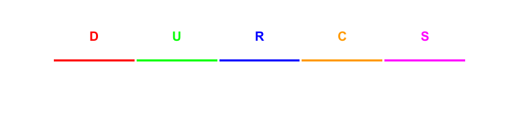

As time goes on, more and more efficient encoding algorithms are encoded. And, naturally, these more efficient algorithms become more and more complicated.
One of the easier (emphasis on -er!) complex algorithms to grasp is arithmetic encoding. The idea behind arithmetic encoding is that you can represent strings of characters as decimals.
Imagine you want to encode a message consisting of a combination of the letters D, U, R, C, and S. To do this with arithmetic encoding, first take a number line that goes from 0 (inclusive) to 1 (exclusive).
Then, split the number line into 5 parts -- one for each letter -- and label it with the appropriate decimals.

Now, say you want to encode the word DURCS. The first letter is D, so we'll "select" that interval (0 to 0.2) and zoom in on it.
Then, we'll split the D section into fifths just like with the initial number line.

The next letter is U, so we'll select the U interval of the D interval (0.04 to 0.08) and zoom in on it. We'll then repeat this process for R, C, and S.

Now we're left with our final interval: 0.06208 to 0.0624 (if you're confused on where this comes from, look at the interval under the S on the final number line!). When we give the arithmetic encoding algorithm some value in this range and the number of letters in our word, it can work backwards and recreate the string!
To see why this is cool and useful, let's say we wanted to encode the same message in ASCII, one of the most common text encodings. In ASCII, each letter corresponds to a number between 0 and 255, so DURCS would be 100 117 114 99 115.
We need 5 whole numbers instead of just 2! Think about if we wanted to make a longer message. The number of ASCII values we need would become a lot longer, whereas we could just keep going with the same decimal in arithmetic encoding and still just need one number.
Of course, this page is a vast oversimplification. Computers don't think in decimals, so all our decimals would really be long strings of 0's and 1's, and computers do some weird things with decimals that we have to account for.
One of the coolest and most useful things about arithmetic encoding is that the partitions don't have to be the same size. In practice, we analyze the text we're trying to encode to determine if some letters appear more often. The most common letters get big partitions, which means that when we have a word with a lot of common letters, we can encode it in a much shorter decimal.
But we won't worry about that today -- this level has gone on long enough! Your flag is the word you get when you decode a word represented by 0.06135 that has 5 letters in the DURCS-alphabet example we explored.
/ `. .' "
.---. < > < > .---.
| \ \ - ~ ~ - / / |
_____ ..-~ ~-..-~
| | \~~~\.' `./~~~/
--------- \__/ \__/
.' o \ / / \ "
(_____, `._.' | } \/~~~/
`----. / } | / \__/
`-. | / | / `. ,~~|
~-.__| /_ - ~ ^| /- _ `..-‘ / \ /\
| / | / ~-. `-/ _ \/__\
|_____| |_____| ~ - . _ _ _ _ _>